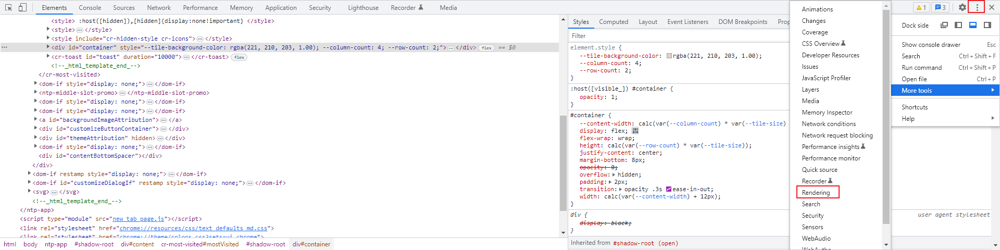
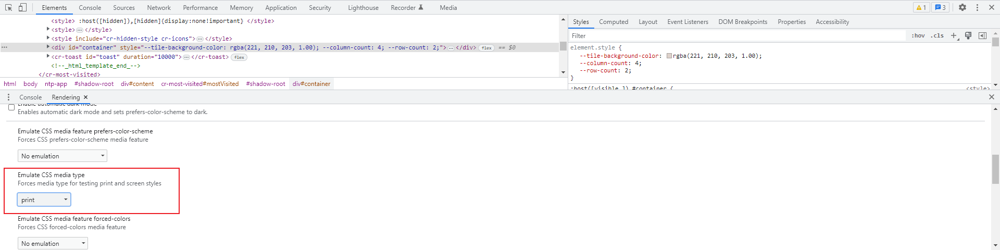

关于页面打印
当想把一个网页打印的时候，可以在浏览器中右键，选择 Print ，浏览器会出来一个打印预览窗口给你预览效果，并且可以设置一些打印参数。
print()
你也可以在页面中，调用 Window: print() method 方法，弹出打印预览窗口。
print() 方法默认是打印当前页面的整个 HTML。
如果你想自定义打印内容，可以参考 Printing 中的例子，利用 iframe 去实现。
通过创建一个 iframe，将打印的内容、样式等写入到 iframe 中，再通过 iframe 去调用 print 方法即可。
你也可以参考 vxe-table 的实现： packages/export/src/util.ts。
如果你需要监听打印事件，参考 How to detect window.print() finish。
Style
打印的样式，可以通过 @media print 设置。
@media screen {} /* print style */ @media print { }
或者 print style sheet ，不过这需要多发一次请求去获取 css 文件。
<link href="/path/to/print.css" media="print" rel="stylesheet" />
你还可以利用 Paged Media 中的属性，控制打印页的表现：
- break-before, break-inside, break-after： 控制在什么地方插入分页符号
@page：设置页面边距，尺寸，更具体的说是 HTML(DOM) 外部的尺寸和边距，CSS for printing to paper 详细介绍了 @page 的作用。
@page { /* 设置打印的时候使用 A4 大小 */ size: A4; }
- widows: 当需要分页时，下一页至少要有多少行内容
- orphans: 当需要分页时，至少保留多少行内容在当前页，可以结合 widows 一起用
- …
除了样式，你还需要考虑打印的内容：
- 通过
display: none;隐藏一些不需要的内容，如头部、侧边栏等。
/* print.css */ header, footer, aside, nav, form, iframe, .menu, .hero, .adslot { display: none; } /* https://css-tricks.com/stylesheets-for-printing/ */ #header, #navigation, #footer, .any, .random, .junk, .on, .your, .page, .that, .shouldnt, .print { display: none; }
<style> /* hidden on-screen */ .print { display: none; } @media print { /* visible when printed */ .print { display: block; } } </style> <p class="print">Some print info.</p>
- 通过
:after,:before增加额外的信息，如显示 <a> 对应的链接。
/* 显示链接 */ a::after { /* `(` 前面的空格是为了避免和链接贴的太近 */ content: " (" attr(href) ")"; } /* 添加一些打印信息，如网站 */ main::after { content: "Copyright site.com"; display: block; text-align: center; }
- 使用打印机打印的时，大量背景会耗费很多墨水，可以考虑移除大面积地背景色，参考 How to Create Printer-friendly Pages with CSS 。
- 页眉页脚，可以用
position: fixed;实现，固定定位的元素会出现在每一页。
Debug
以 Chrome 为例，你可以打开 Developer tools ，在更多工具中找到 rendering ，设置 Emulate CSS media type 为 print ，可以模拟 @media print ，从而调试打印样式。
{kind=link}

{kind=link}

不过在这个模式下，还是无法调试分页的效果，依然需要通过打印预览(右键打印)去看实际效果。
如果最终会被打印成纸质，最好使用打印机实际打印一份看看效果，可能由于墨水或者黑白打印的关系，一些内容会看不清，可能还需要调整。
其他注意点
- 如果页面存在动画，打印的时候需要等待动画完成，不然可能由于动画未完成导致部分元素没有显示，或者考虑关闭动画
Examples
Refs
- Printing the web: making webpages look good on paper
- Window: print() method
- Printing
- Paged Media
- vxe-table/packages/export/src/util.ts
-
这篇文章把打印相关的样式，注意的事项讲的比较全面，不过是 2013 年的文章，部分内容可能过时了。
How to Create Printer-friendly Pages with CSS
这篇文章也是整体讲了打印样式的设置和注意事项，还包含了如何改进可以节省打印的墨水，例如避免用大片黑色背景，而改用 border。
- CSS for printing to paper